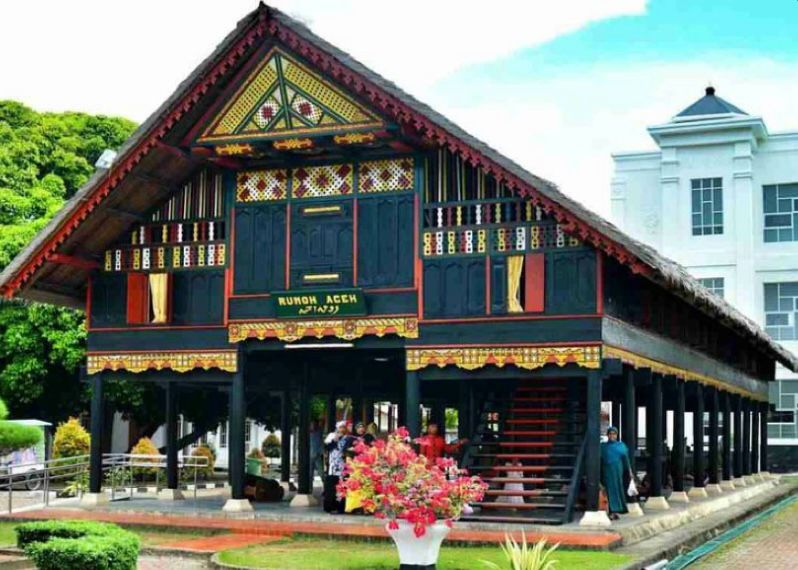
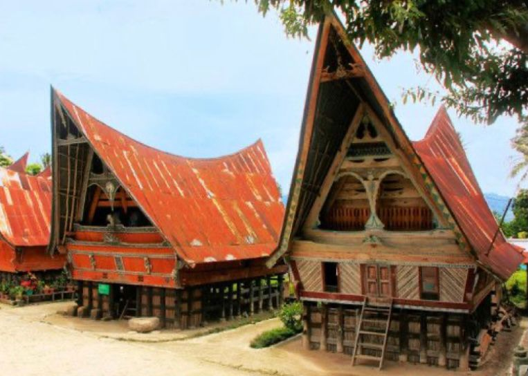
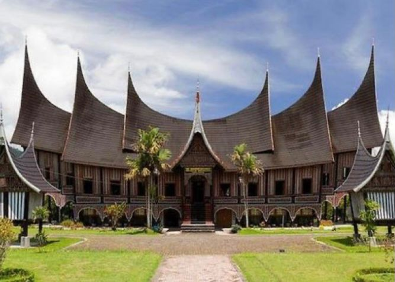
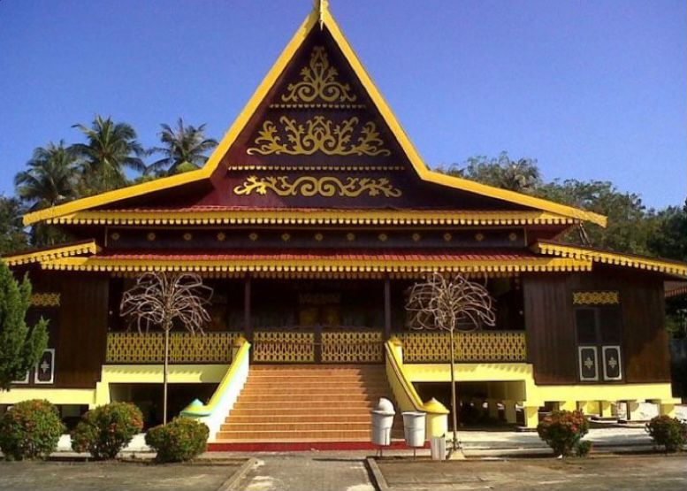
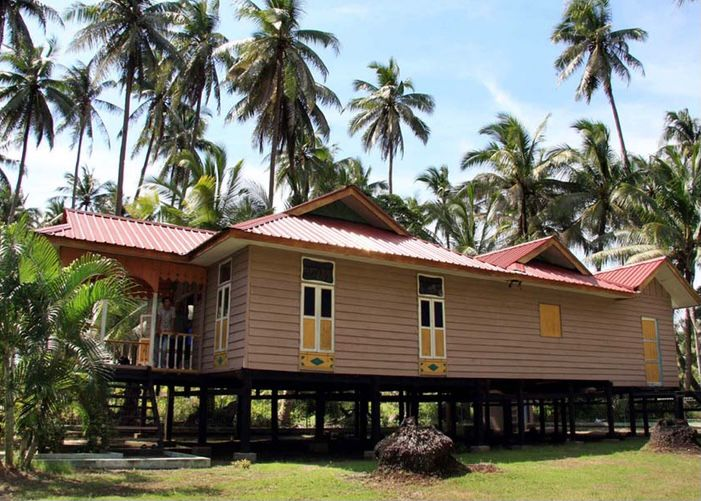
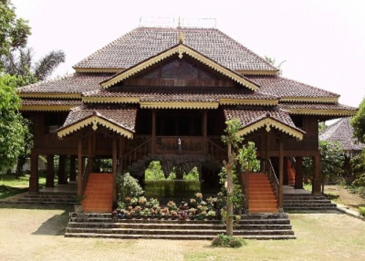
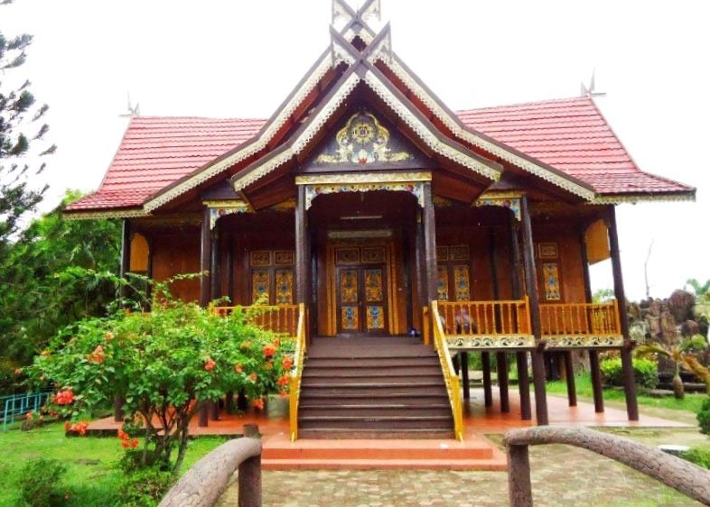

1. Rumah adat Provinsi Aceh : Krong bade
Rumah Krong Bade dari Aceh ini berbentuk memanjang dari timur ke barat menyerupai persegi panjang. Di bagian depan rumah dilengkapi dengan tangga untuk masuk ke dalam rumah.
2.Rumah adat sumatra utara : Bolon
Pada rumah adat Bolon ini, terdapat dua bagian yang berbeda, yaitu Jabu Bolon dan juga Jabu Parsakitan. Jabu Bolon biasa menjadi tempat untuk keluarga besar, sedangkan Jabu Parsakitan adalah tempat untuk membicarakan masalah adat. Keunikan dari rumah adat Sumatera Utara ini adalah tidak ada sekatan antara setiap ruangan. Jadinya, semua anggota keluarga tidur bersama di dalam ruangan besar.
3.Rumah adat sumatra barat : Gadang
Rumah adat satu ini terlihat mewah, bukan? Berasal dari Sumatera Barat, rumah ini memiliki beberapa atap yang runcing dan menjulang ke atas. Rumah adat Gadang terbuat dari ijuk dan bentuknya mirip seperti tanduk kerbau, yang melambangkan kemenangan suku Minang dalam perlombaan adu kerbau di Jawa. selengkapnya4.Rumah adat Riau : Selaso jatuh kembar
Rumah ini memiliki arti rumah dengan dua selasar. Masyarakat Riau tidak menjadikan Rumah Selaso Jatuh Kembar sebagai tempat tinggal mereka, tetapi hanya menggunakannya untuk acara adat. selengkapnya5.Rumah adat kepulauan riau : Rumah atap limas potong
Rumah adat dari Kepulauan Riau ini terlihat sangat sederhana. Berbentuk seperti rumah panggung, yang memanjang ke belakang dengan dinding kayu tersusun secara vertikal. Atap dari rumah adat Limas Potong memiliki lima bumbungan dengan menggunakan seng berwarna merah Selengkapnya6.Rumah adat Bengkulu : Bubungan Lima
Rumah adat dari Bengkulu ini memiliki tiang penopang dan menggunakan kayu khusus untuk membuatnya, yaitu kayu Medang Kemuning. Untuk memasuki rumah ini, Anda juga harus menggunakan tangga, yang berada pada bagian depan rumah. Sama seperti rumah adat dari Riau, masyarakat Bengkulu menggunakan rumah ini untuk acara adat saja, bukan untuk menjadi tempat tinggal. Selengkapnya7.Rumah adat Jambi : Panggung
Rumah adat provinisi dari Jambi ini adalah desain yang tertua di daerah tersebut, dengan bentuk persegi panjang. Rumah Adat Panggung dilengkapi dengan tangga di depan rumah. Orang-orang sering menyebutkan bagian atap dari Rumah Panggung ini sebagai “Gajah Mabuk” karena bentuknya yang menyerupai perahu dengan ujung melengkung. Biasanya, rumah adat dari Jambi digunakan untuk tempat tinggal dan juga tempat bermusyawarah. Selengkapnya